MOVIES AND SHOWS
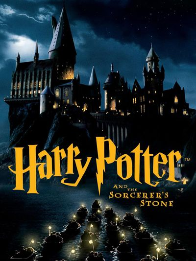 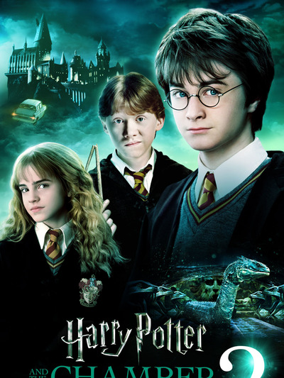 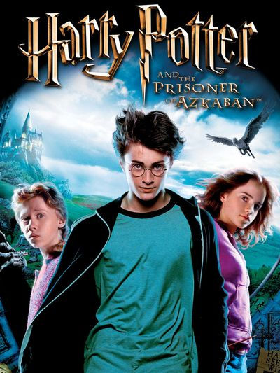 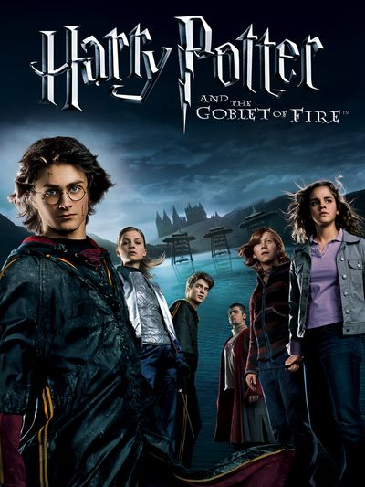 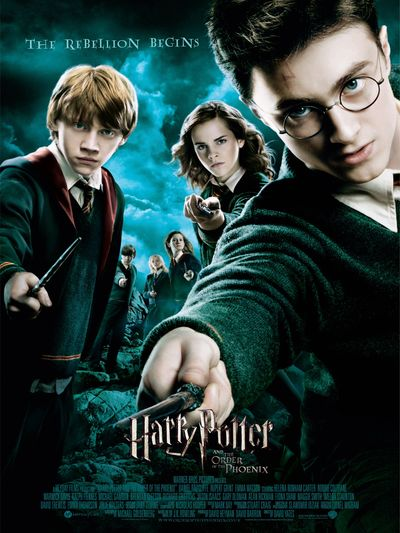 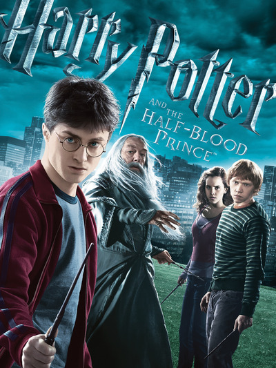 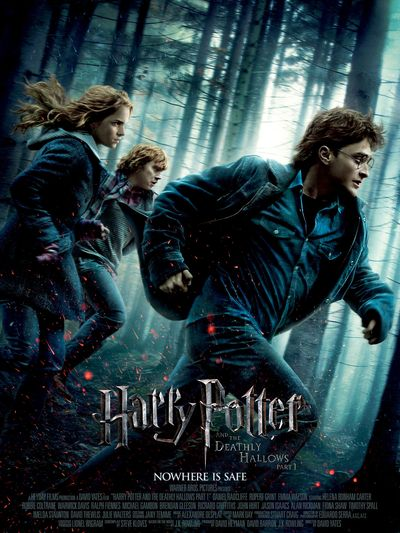 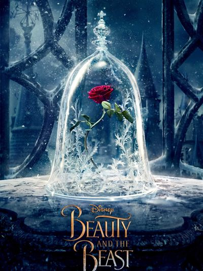
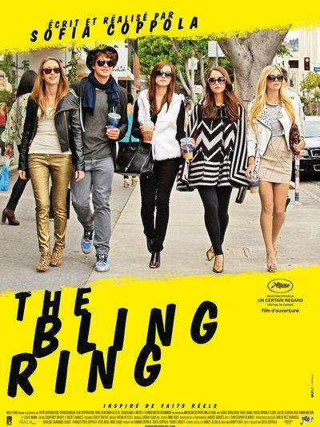
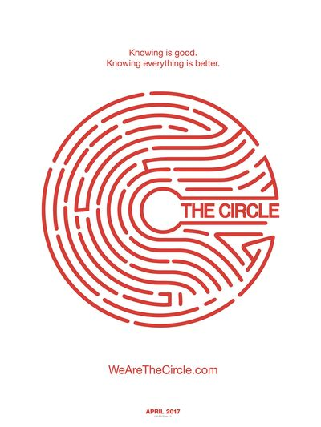
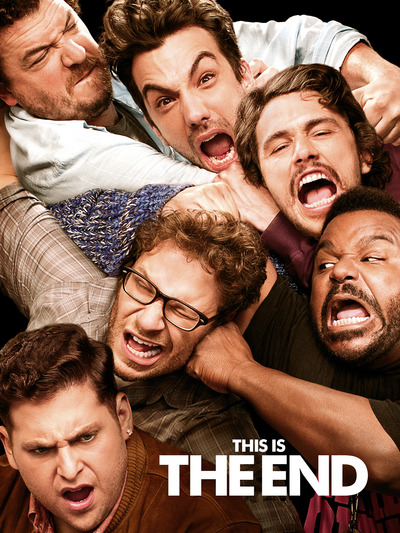
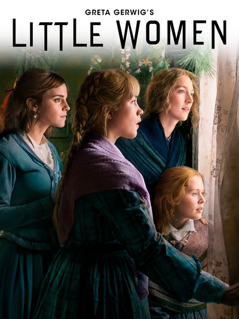
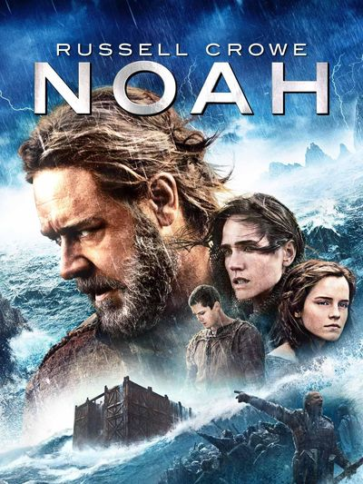
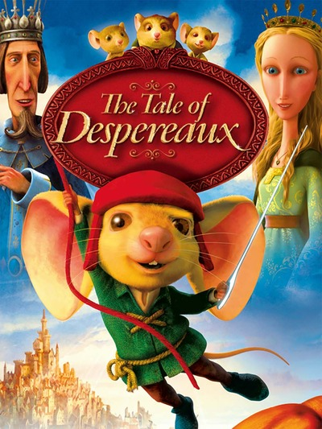
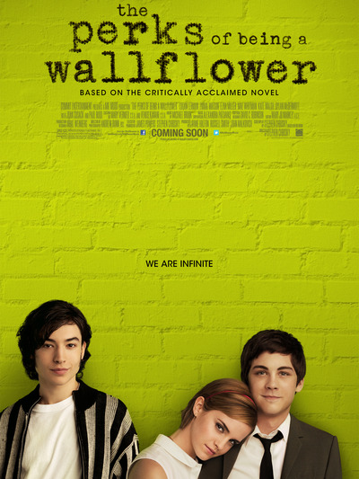
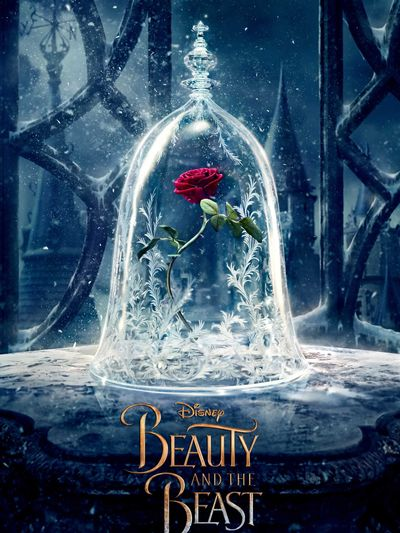
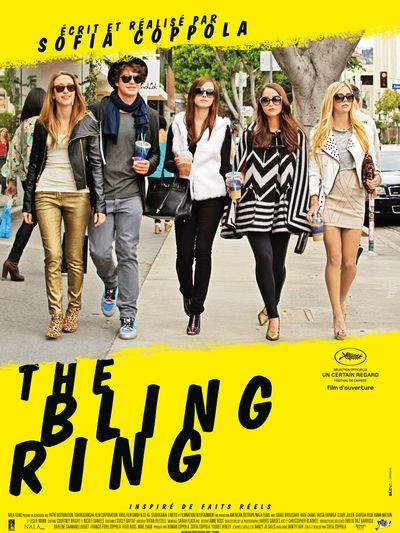
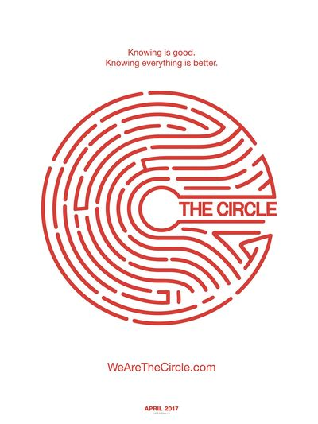
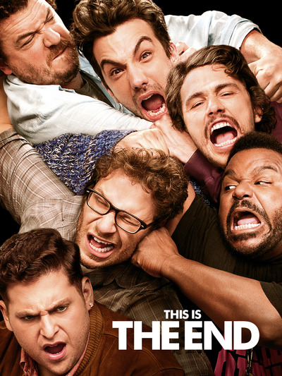
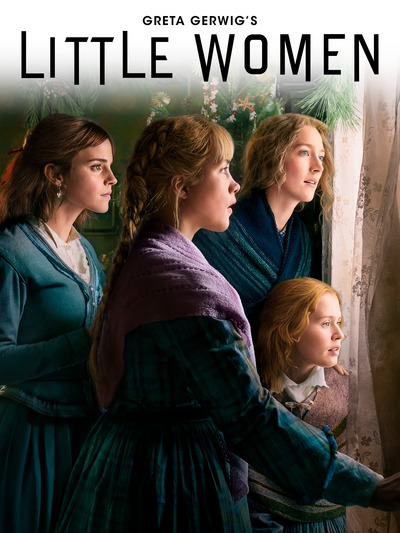
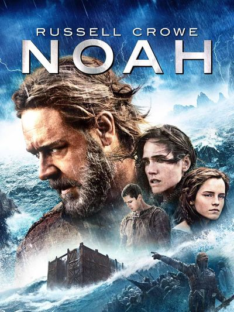
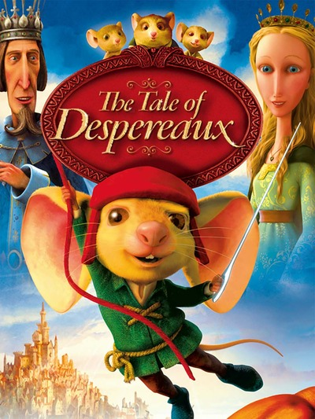
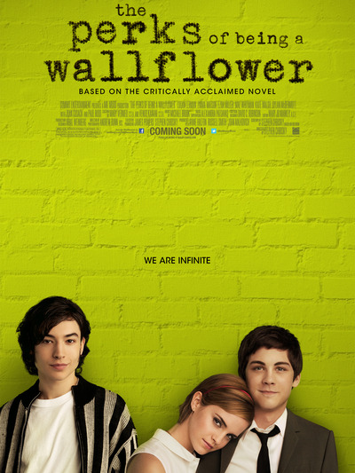
Emma Charlotte Duerre Watson was born on 15 April 1990. She is an English actress, model, and activist. Emma was born in Paris and raised in Oxfordshire,Emma Watson attended the Dragon School and trained as an actress at the Oxford branch of Stagecoach Theatre Arts. As a child, she rose to prominence with her first professional acting role as Hermione Granger in the Harry Potter film series, and she had only acted in school plays.She also starred in the 2007 television adaptation of the novel Ballet Shoes and lent her voice to The Tale of Despereaux in 2008. After the last Harry Potter film, she took on starring and supporting roles in My Week with Marilyn in 2011, The Perks of Being a Wallflower in 2012 and The Bling Ring in 2013, made an appearance as an exaggerated version of herself in This Is the End in 2013, and played the title character's adopted daughter in Noah in 2014. She went on to star as Belle in the 2017 musical romantic fantasy Beauty and the Beast, and Meg March in the coming-of-age drama Little Women in 2019, the latter of which was nominated for the Academy Award for Best Picture. Her other film roles include Regression, Colonia both 2015, and The Circle in 2017.
In 1999, casting began for Harry Potter and the Philosopher's Stone, the film adaptation of British author J. K. Rowling's best-selling novel. Casting agents found Watson through her Oxford theatre teacher, and producers were impressed by her confidence. After eight auditions, producer David Heyman told Watson and fellow applicants Daniel Radcliffe and Rupert Grint that they had been cast in the roles of the school friends Hermione Granger, Harry Potter and Ron Weasley, respectively. Rowling supported Watson from her first screen test. She was in all the Harry Potter films as Harry Potter and the Philosopher's Stone in 2001(age:11), Harry Potter and the Chambers of Secrets in 2002 (age:12), Harry Potter and the Prisoner of Azkaban in 2004 (age:14), Harry Potter and the Goblet of Fire in 2005 (age:15), Harry Potter and the Order of the Phoenix in 2007 (age: 17), Harry Potter and the Half-Blooded Prince in 2009 (age:18), Harry Potter and the Deathly Hallows Part:1 in 2010(age:19) and Harry Potter and the Deathly Hallows Part 2 in 2011(age:20). She began modelling in 2005. Emma Watson's parents are Jacqueline Luesby(mom), Chris Watson(dad) and her siblings are Alex Watson(brother), Lucy Watson(sister), Toby Watson(brother), Nina Watson(sister). As of today she is 30 years old.
In 2005, Emma Watson began her modelling career with a photo shoot for Teen Vogue, which made her the youngest person ever to feature on its cover. Three years later, the British press reported that Emma Watson was to replace Keira Knightley as the face of the fashion house Chanel, but this was denied by both parties. In June 2009, following several months of rumours, Emma Watson confirmed that she would be partnering with Burberry as the face of their Autumn/Winter 2009 campaign, for which she received an estimated six-figure fee.She also appeared in Burberry's 2010 Spring/Summer campaign alongside her brother Alex Watson, musicians George Craig and Matt Gilmour, and model Max Hurd. In February 2011,Emma Watson was awarded the Style Icon award from British Elle by Dame Vivienne Westwood.Emma Watson continued her involvement in fashion advertising when she announced she had been chosen as the face of Lancôme in March 2011.In September 2009,Emma Watson announced her involvement with People Tree, a fair trade fashion brand.Emma Watson worked as a creative adviser for the company to create a spring line of clothing, which was released in February 2010; the range featured styles inspired by southern France and London.
In 2001 she was in Harry Potter and the Philosopher's Stone as Hermione Granger.
In 2002 she was in Harry Potter and the Chamber of Secrets as Hermione Granger.
In 2004 she was in Harry Potter and the Prisoner of Azkaban as Hermione Granger.
In 2005 she was in Harry Potter and the Goblet of Fire Hermione as Granger.
In 2007 she was in Harry Potter and the Order of the Phoenix as Hermione Granger.
In 2008 she was in The Tale of Despereaux as Princess Pea.
In 2009 she was in Harry Potter and the Half-Blood Prince as Hermione Granger.
In 2010 she was in Harry Potter and the Deathly Hallows – Part 1 as Hermione Granger.
In 2011 she was in Harry Potter and the Deathly Hallows – Part 2 as Hermione Granger.
In 2011 she was in My Week with Marilyn as Lucy.
In 2012 she was in The Perks of Being a Wallflower as Samantha "Sam" Button.
In 2013 she was in The Bling Ring as Nicki Moore.
In 2013 she was in This Is the End as Herself.
In 2014 she was in Noah as Ila.
In 2015 she was in Colonia as Lena.
In 2015 she was in Regression asAngela Gray.
In 2017 she was in Beauty and the Beast as Belle.
In 2017 she was in The Circle as Mae Holland.
In 2019 she was in Little Women as Margaret "Meg" March.
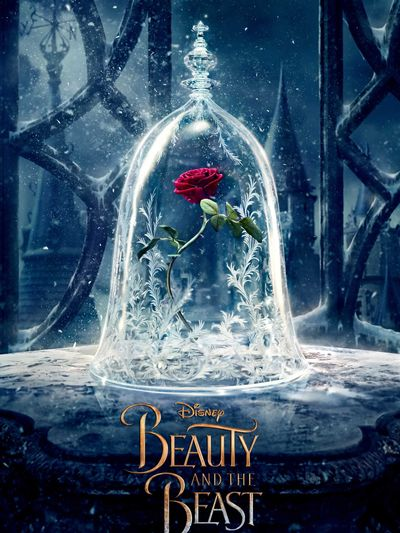
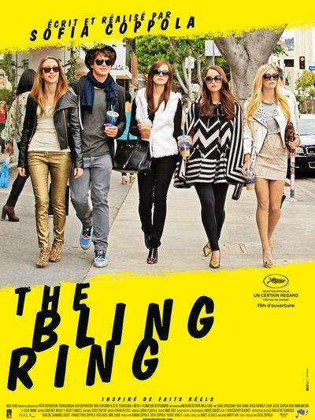
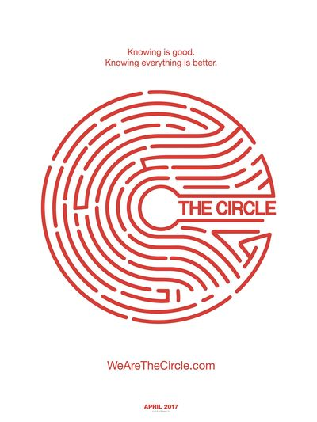
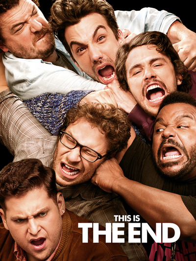
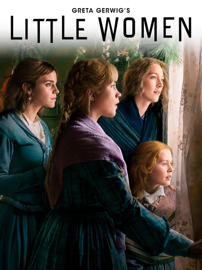
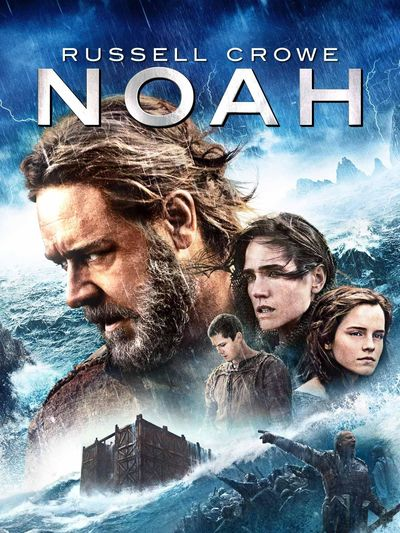
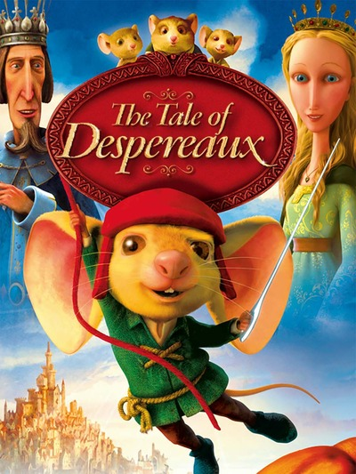
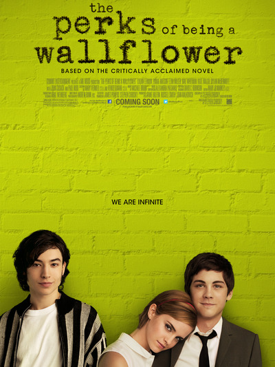